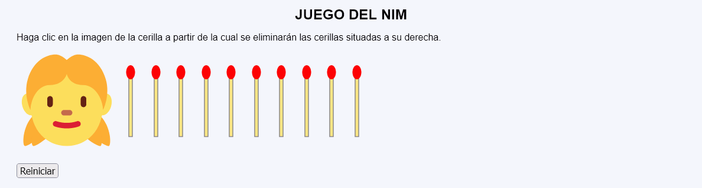
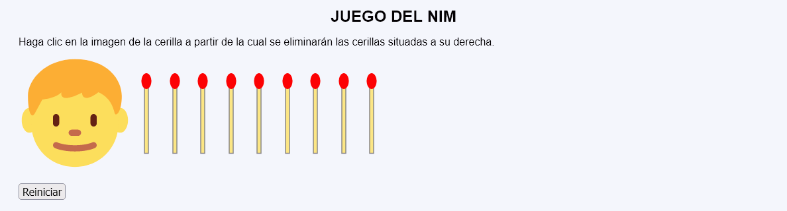
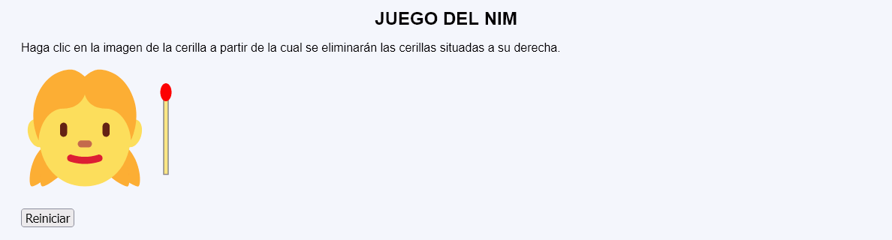
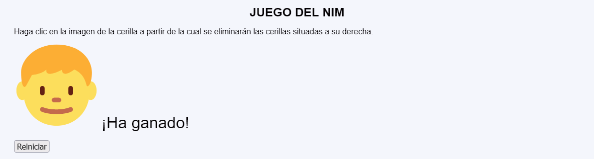

Juego del Nim - Comentarios
- Descripción del programa:
- El programa muestra una imagen de un chico o de una chica, que indica el jugador al que le toca jugar.
- A la derecha de la imagen del jugador se muestra inicialmente una cantidad de cerillas, al azar entre 7 y 12.
- Al hacer clic en una cerilla, se eliminan esa cerilla y las situadas a su derecha y se cambia la imagen del jugador.
- El jugador que elimina la última cerilla, pierde (es decir, cuando no quedan cerillas, el jugador al que le toca jugar ha ganado).
- Al hacer clic en el botón Reiniciar, se muestra una nueva partida. El jugador inicial puede ser tanto la chica como el chico, al azar.
- El programa podrá tener dos páginas y utilizar sesiones.
- Si se intenta acceder directamente a la segunda página sin pasar por la primera o si se envía a la segunda página información distinta a la esperada, se redirigirá a la primera página sin informar al usuario, ni se producirá ningún cambio.
- No se debe cambiar el nombre del control incluido en las plantillas.
- Al actualizar la primera página (con F5), no se producirá ningún cambio.
 Para simplificar el programa, todas las cerillas pueden ser botones del formulario, pero se valorará en la corrección del examen que sólo se puedan eliminar cerillas cuando se haga clic en una de las tres últimas cerillas de la fila.
Para simplificar el programa, todas las cerillas pueden ser botones del formulario, pero se valorará en la corrección del examen que sólo se puedan eliminar cerillas cuando se haga clic en una de las tres últimas cerillas de la fila.- Capturas de pantalla de ejemplo:



